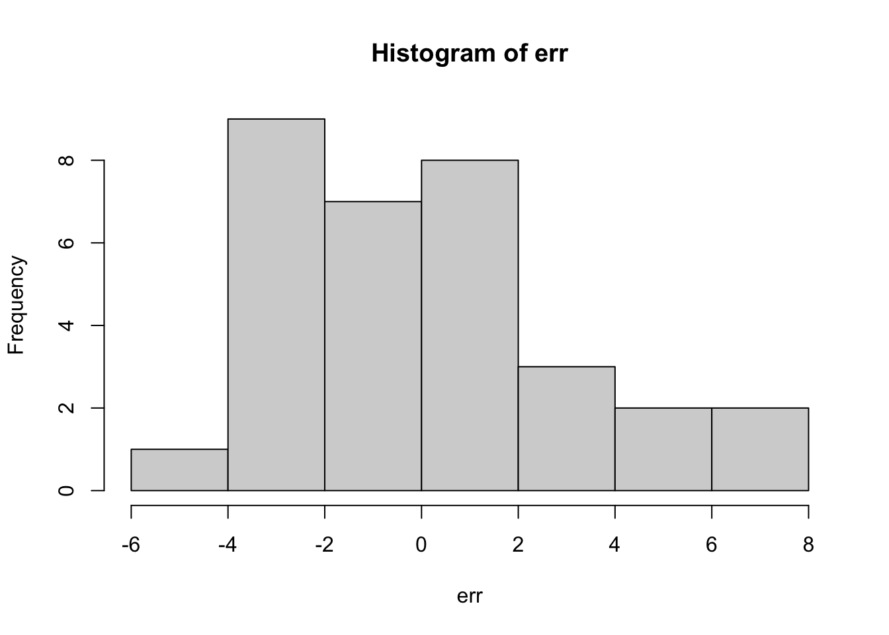
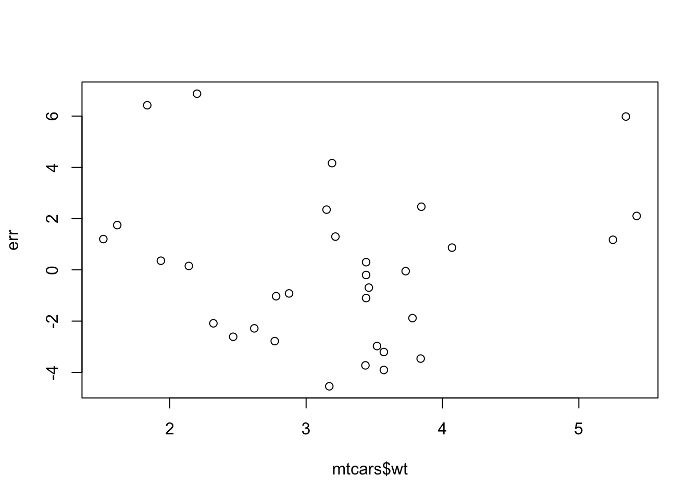
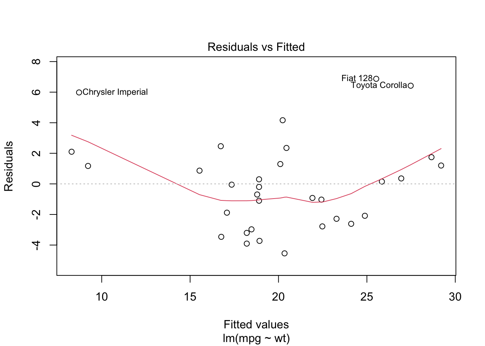
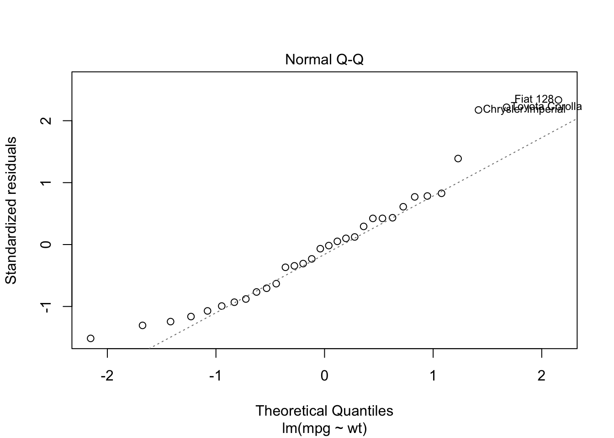
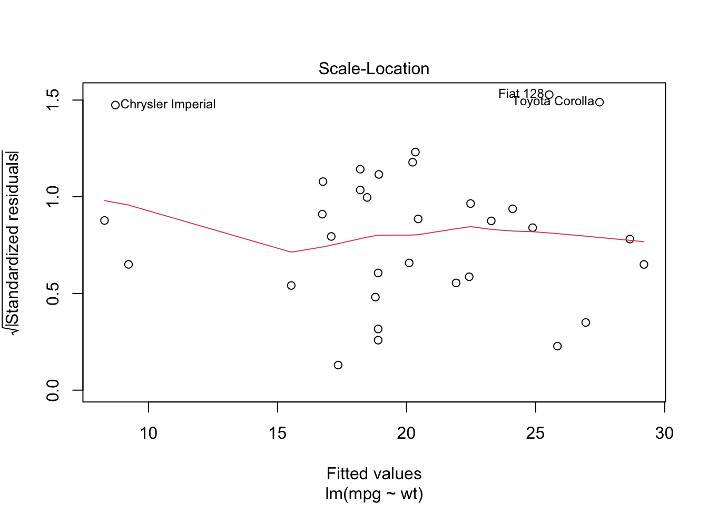
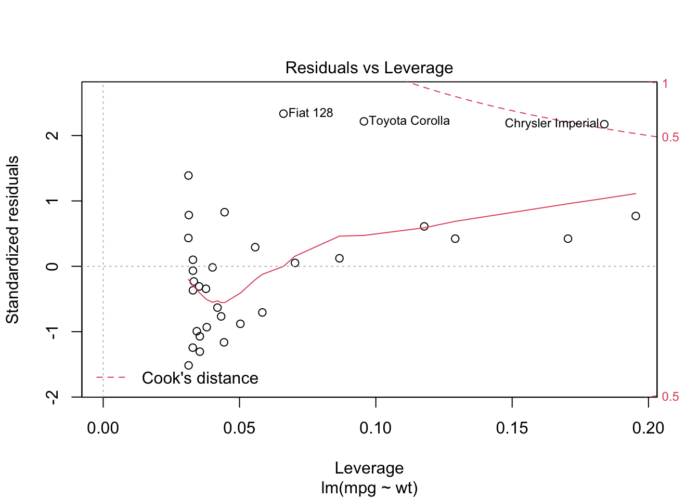

Week 8 Linear Regression
This week we introduce linear regression and the various statistical inference tools used in linear regression analysis.
8.1 What we cover this week
- Linear regression concepts
- Ordinary least squares
- Hypothesis testing and regression
8.2 Readings
Key sections:
- Introduction to simple linear regression
- Partitioning sums of squares
- Standard error of the estimate
- Inferential statistics for b and r
8.3 Lab
This lab is due on the Dropbox on MyLearningSpace on Friday April 9th
For this lab we will use one of the built in datasets. R has a number of sample datasets and many packages also have sample data that comes with them. We will use the mtcars dataset that includes data from a 1974 Motor Trend magazine describing characteristics of 32 cars. You can check out the details of the variables by examining the documentation with ?mtcars
The mtcars dataset is a data frame. This is a tabular data structure, the individual columns of the data frame can be accessed using the $ notation.
For example:
summary(mtcars$mpg)## Min. 1st Qu. Median Mean 3rd Qu. Max.
## 10.40 15.43 19.20 20.09 22.80 33.90We will use this dataset to explore linear regression. The function for fitting a linear regression model is lm. We can create a linear regression object by assigning the output of lm to a new variable, or we wrap it in a summary command. Here is an example
summary(lm(mtcars$mpg~mtcars$wt))##
## Call:
## lm(formula = mtcars$mpg ~ mtcars$wt)
##
## Residuals:
## Min 1Q Median 3Q Max
## -4.5432 -2.3647 -0.1252 1.4096 6.8727
##
## Coefficients:
## Estimate Std. Error t value Pr(>|t|)
## (Intercept) 37.2851 1.8776 19.858 < 2e-16 ***
## mtcars$wt -5.3445 0.5591 -9.559 1.29e-10 ***
## ---
## Signif. codes: 0 '***' 0.001 '**' 0.01 '*' 0.05 '.' 0.1 ' ' 1
##
## Residual standard error: 3.046 on 30 degrees of freedom
## Multiple R-squared: 0.7528, Adjusted R-squared: 0.7446
## F-statistic: 91.38 on 1 and 30 DF, p-value: 1.294e-10Another way to do the same thing is to just specify the column names but then set the data argument in the lm function to specify the name of the data frame that the columns are in
summary(lm(mpg~wt, data=mtcars))##
## Call:
## lm(formula = mpg ~ wt, data = mtcars)
##
## Residuals:
## Min 1Q Median 3Q Max
## -4.5432 -2.3647 -0.1252 1.4096 6.8727
##
## Coefficients:
## Estimate Std. Error t value Pr(>|t|)
## (Intercept) 37.2851 1.8776 19.858 < 2e-16 ***
## wt -5.3445 0.5591 -9.559 1.29e-10 ***
## ---
## Signif. codes: 0 '***' 0.001 '**' 0.01 '*' 0.05 '.' 0.1 ' ' 1
##
## Residual standard error: 3.046 on 30 degrees of freedom
## Multiple R-squared: 0.7528, Adjusted R-squared: 0.7446
## F-statistic: 91.38 on 1 and 30 DF, p-value: 1.294e-10Examining the description of the columns with ?mtcars we can see that this is creating a linear regression model with Miles/(US) gallon as the dependent variable and Weight (1000 lbs) as the independent variable. Thinking about this, and the fact these are cars from the early 1970s, we might expect the relationship between these two variables to be negative - as car weight increases the miles/per gallon should decrease. Looking at the output above, we see our two coefficient estimates are in the “Estimate” column. The “(Intercept)” Estimate is 37.2851 and the slope coefficient for wt is -5.3445.
We interpret the Y-intercept as the value of Y when the X variable is zero. Often, the Y-intercept does not have any real meaning. The slope coefficient is usually what we are interested in. Here a value of -5.3445 means the average change in Miles/(US) gallon for a one-unit increase in weight. It is important to think about what the units the data are measured in. We can see from the documentation that the wt variable is measured in 1000s of lbs. Therefore for every extra 1000lbs of car weight, the miles per gallon decreases by -5.3445.
The next column in the regression output is the standard error column. These are standard errors on the coeffient estimates, and next to that is the t-statistics. Recall that these are t-test on if the coefficents are significant, i.e., are they statistically different from zero.
\(t = \frac{\beta_1 - 0}{\beta_{1se}}\)
so for the wt variable, the t-statistic is just \(t=\frac{-5.3445 - 0}{0.5591}=-9.559\) and the last column is the p-value on the hypothesis test.
The Residual standard error is the standard error of the estimate. We get the R-squared as well which we can calculate from the SSR/SST formulas. Or we can see the sums of squares by using the anova function such as
anova(lm(mpg~wt, data=mtcars))## Analysis of Variance Table
##
## Response: mpg
## Df Sum Sq Mean Sq F value Pr(>F)
## wt 1 847.73 847.73 91.375 1.294e-10 ***
## Residuals 30 278.32 9.28
## ---
## Signif. codes: 0 '***' 0.001 '**' 0.01 '*' 0.05 '.' 0.1 ' ' 1where SSR=847.73, SSE=278.32, and SST = SSR+SSE, so \(R^2=\frac{SSR}{SST}\) - which expresses the percentage of variation in the Y variable explained by the X variable. Here we see that \(R^2=\frac{847.73}{1126.05}=0.7528\). We also see the F statistic which is a hypothesis test on the model as a whole, and just as in our anova for comparing means, we are using the SSR/SST as the basis for the F statistic.
We often want to get the model residuals to examine their distribution. We can do this by using the residuals function
err <- residuals(lm(mpg~wt, data=mtcars))
hist(err)
which we can see are centered on zero and approximately normally distributed. We can also check the heterogeneity by comparing the residuals against the x values
plot(mtcars$wt, err)
we can also see some of these diagnostic plots by creating an lm object by assigning the output of lm to a new object and then plotting it. Read up on how to interpret these diagnostics here
lmo <- lm(mpg~wt, data=mtcars)
plot(lmo)
8.3.1 Lab Assignment
Create a regression model using Miles/(US) gallon as the dependent variable and Gross horsepower as the independent variable. Report all model statistics and comment on the model diagnostics. Include a basic scatterplot of the data as well. Write a sentence or two interpreting this analysis. (out of 5)
Create a regression model using two other variables from the
mtcarsdataset (i.e., not miles per gallon as dependent and horsepower as independent). Ensure that the there is a plausible causal connection between the independent and dependent variables. Report all model statistics and comment on the model diagnostics. Include a basic scatterplot of the data as well. Write a sentence or two interpreting this analysis. (out of 5)What would be the problem with using all of the variables (other than
mpg) in themtcarsdataset as independent variables to predictmpg? (out of 5)Look at the other datasets available in the base package by checking
library(help = "datasets"). Pick one and create a linear regression model. Report all model statistics and comment on the model diagnostics. Include a basic scatterplot of the data as well. Write a sentence or two interpreting this analysis. (out of 5)Using the
quakesdataset, examine whether there is a significant relationship between earth quake depth and earthquake magnitude. Report all relevant statistics and interpret the findings. (out of 5)Using everything you now know how to do, explore a research question of interest in detail, using either your own external dataset or one of the ones used previously in lab or the built in datasets. In your analysis, do a confidence interval, at least three graphs, one hypothesis test, and one regression analysis. Try to put your analysis together into a logical flow and write a paragraph or two interpreting your findings. (out of 15)